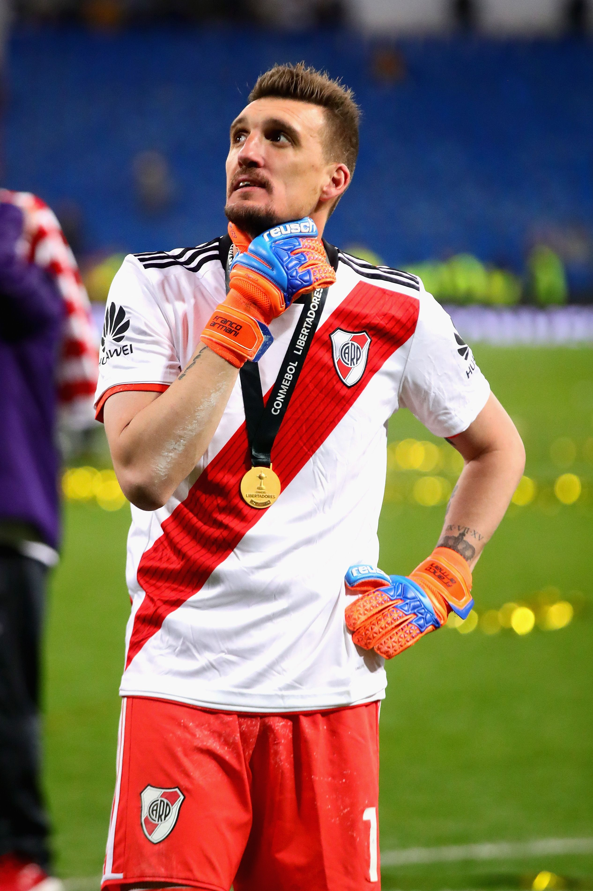

¿QUIEN ES FRANCO ARMANI?
Contrario a lo que dice la creencia popular, Franco Armani no es el hermano de Giorgio Armani
Franco Armani es el Arquero Titular de River Plate desde enero del 2018,
y desde entonces es, sin lugar a duda, el mejor arquero de cualquier equipo en la argentina.
